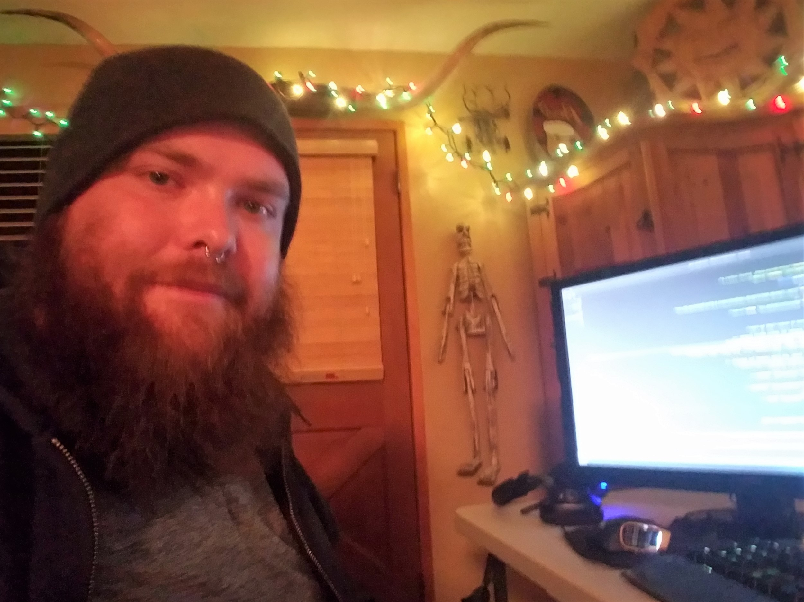

About Me
 My name is Adam Karman, and I have long dreamed of pursuing a career in the tech field. Born and raised in Arizona, I have always had an interest in computers, and have dabbled with coding on my own. I eventually attended the University of Arizona's Full Stack Web Development Bootcamp, to learn the skills necessary to start a career.
I spend my time writing code, playing video games, listening to music, and enjoying the weather up in the
mountains.